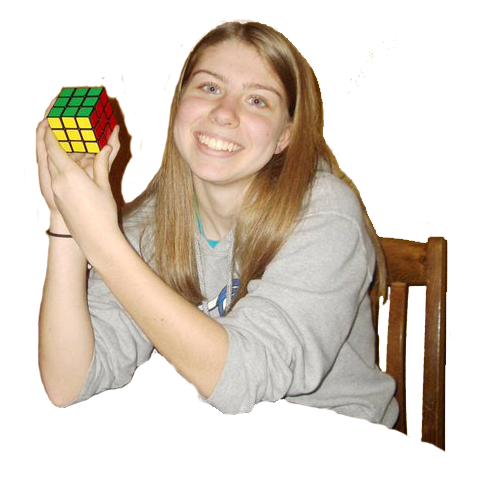

About Me

I'm a Computer Science and Psychology major at Amherst College, graduating in May 2016. Last year, I studied abroad at Queen Mary University of London in the fall and Beijing Language and Culture University in the spring of 2015. I've also recently obtained a Front-End Developer certificate, and am now working on completing Full-Stack certificate from FreeCodeCamp.
I'm a member of the Amherst College Computer Science Club and served as the president of Amherst College Habitat for Humanity. I've studied Mandarin Chinese for a little over a year and Spanish for about 6 years. I thoroughly enjoy every kind of puzzle: logic puzzles, crossword puzzles, jigsaw puzzles, Rubik's Cubes, KenKens, Bananagrams, and more!
Recent Projects
- Given a random set of points in a 2D plane, this program will find the closest pair of points in O(nlogn) time
- Coded for my Data Structures & Algorithms II class
- Languages: Java
- Find the code on github
- This web app produces a random word, runs a timer, and keeps score
- Independently coded project
- Languages: HTML5, CSS3, JavaScript
- Find the code on github or check out the web app.
- Given point sets for a 3D cube and pyramid, this program will produce 3D parallel and perspective animations
- Coded for my Computer Graphics class at Queen Mary University of London
- Languages: Java
- Find the code on github
- Various projects
- Open-source code
- Languages: Java, JavaScript, HTML5, CSS3, Python, Assembly Language
- See more of my recent projects on my github